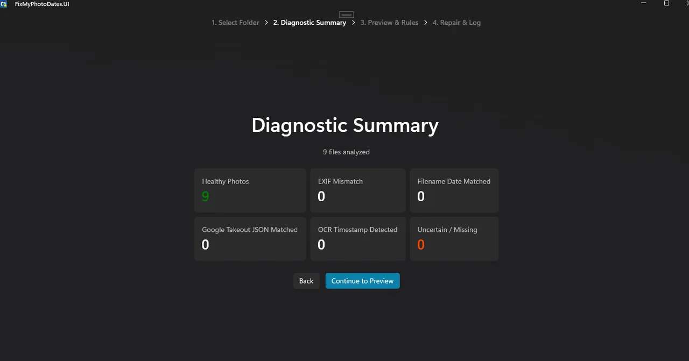
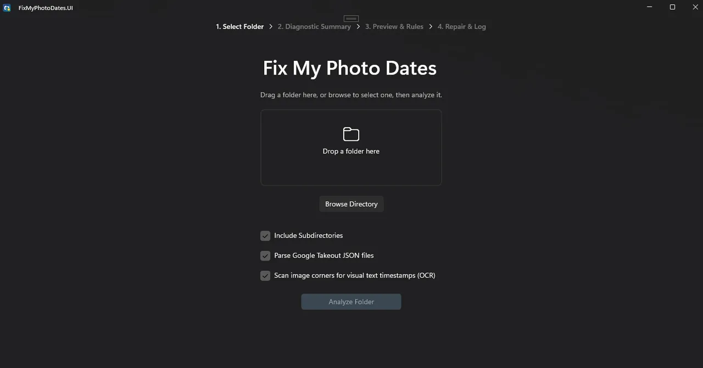
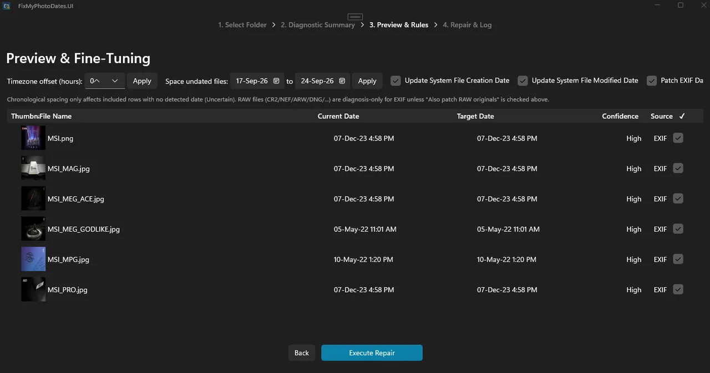
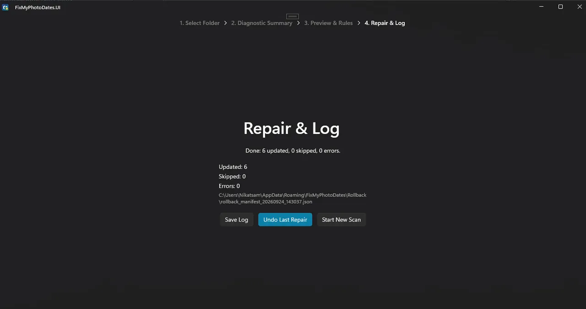
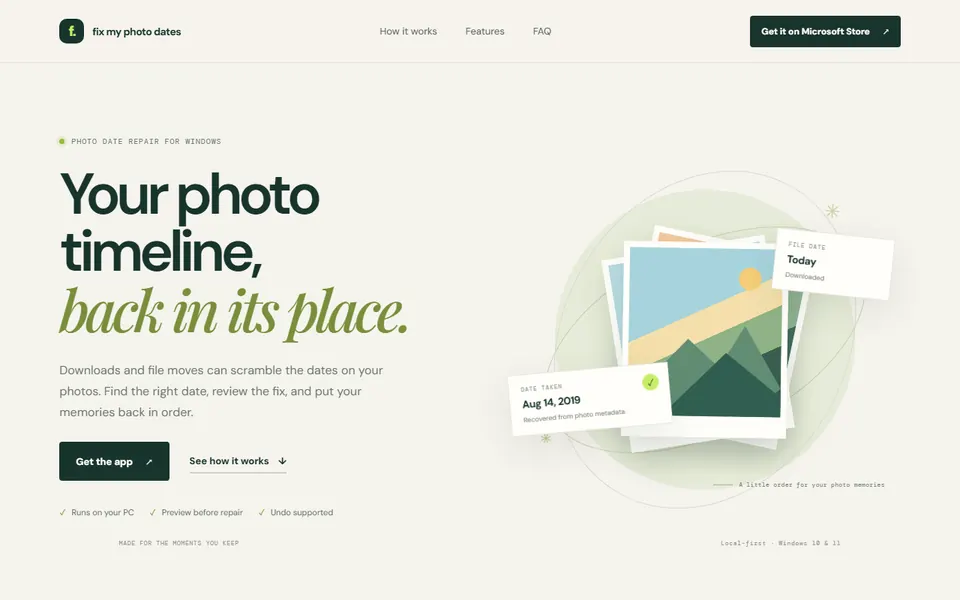

Windows-App · Online
Fix My Photo Dates
Wenn Daten nach einem Export oder Verschieben falsch sind, findet dieses Werkzeug die Abweichung, zeigt die vorgeschlagene Korrektur und lässt Sie sie rückgängig machen. Alles läuft auf Ihrem Windows-PC.
Für wen: Für alle, deren Fotos nach einem Export oder Verschieben falsche Daten haben.
Was es tut
- Diagnostiziert und korrigiert Zeitstempel nach Takeout-Exporten, iCloud-Exporten oder verschobenen Dateien
- Zeigt vor jeder Änderung eine Vorschau und erlaubt das Zurücksetzen
- Die gesamte Verarbeitung bleibt auf Ihrem Windows-PC
Screenshots




